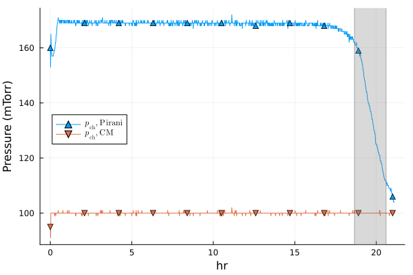
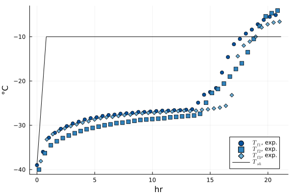
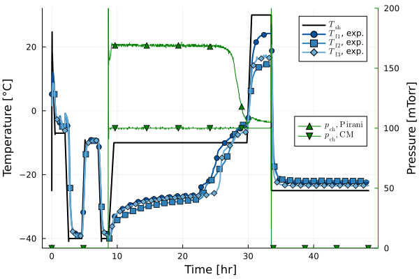
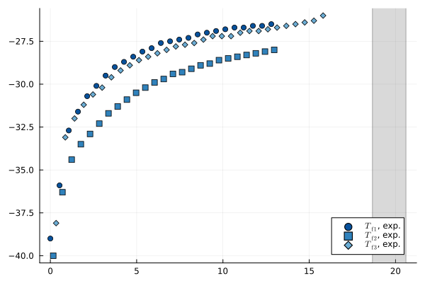
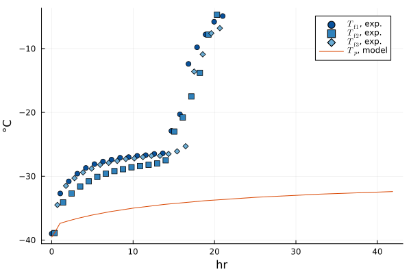
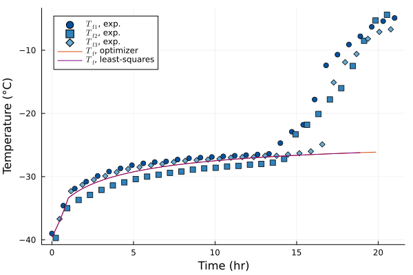

Imports
LyoPronto is this package. It reexports several other packages, so after using LyoPronto, you have effectively also done using Unitful and a few others.
using LyoProntoThese packages are used in the test suite, but you can use others in their place.
TypedTables provides a lightweight table structure, not as broadly flexible as a DataFrame but great for our needs.
using TypedTables, CSVTransformVariables provides tools for mapping optimization parameters to sensible ranges.
using TransformVariablesOptimization provides a common interface to a variety of optimization packages, including Optim. We import it with OptimizationOptimJL to specify Optim as a backend. LineSearches gives a little more granular control over solver algorithms for Optim.
using OptimizationOptimJLusing LineSearchesusing ADTypes: AutoForwardDiffOr, instead of using a scalar optimization package, we can use a least-squares solver.
using NonlinearSolvePlots is a frontend for several plotting packages, and its companion package StatsPlots has a very nice macro I like.
using Plotsusing StatsPlots: @dfusing LaTeXStringsRead in process data
file_loc = "./2024-06-04-10_MFD_AH.csv"# Data start at 7th row of CSV file.procdata_raw = CSV.read(file_loc, Table, header=7)# Convert time stamps to time counting from zerot = uconvert.(u"hr", procdata_raw.CycleTime .- procdata_raw.CycleTime[1])# At midnight, timestamps revert to zero, so catch that casefor i in eachindex(t)[begin+1:end] if t[i] < t[i-1] t[i:end] .+= 24u"hr" endendIf you want to follow along exactly, you can download the CSV file here, and some metadata about the cycle here.
# Rename the columns we will use, and add unitsprocdata = map(procdata_raw) do row # In the anonymous `do` function, `row` is a row of the table. # Return a new row as a NamedTuple (pirani = row.VacPirani * u"mTorr", cm = row.VacCPM * u"mTorr", T1 = row.TP1 * u"°C", T2 = row.TP2 * u"°C", T3 = row.TP4 * u"°C", # Quirk of this experimental run: TP3 slot was empty Tsh = row.ShelfSetPT * u"°C", phase = row.Phase )endprocdata = Table(procdata, (;t)) # Append time to table# MicroFD, used for this experiment, has a column indicating primary dryingpd_data = filter(row->row.phase == 4, procdata)# Count time from the beginning of experimentpd_data.t .-= pd_data.t[1]1268-element Vector{Unitful.Quantity{Rational{Int64}, 𝐓, Unitful.FreeUnits{(hr,), 𝐓, nothing}}}:
0//1 hr
1//60 hr
1//30 hr
1//20 hr
1//15 hr
1//12 hr
1//10 hr
7//60 hr
2//15 hr
3//20 hr
⋮
75557//3600 hr
75617//3600 hr
75677//3600 hr
75737//3600 hr
75797//3600 hr
75857//3600 hr
75917//3600 hr
75977//3600 hr
76037//3600 hrIdentify one definition of end of primary drying with Savitzky-Golay filter
t_end = identify_pd_end(pd_data.t, pd_data.pirani, Val(:onoff))(18.660158374328965 hr, 20.60456117316964 hr)Plots provides a very convenient macro @df which inserts table columns into a function call, which is very handy for plotting. Here this is combined with a recipe for plotting the pressure:
@df pd_data exppplot(:t, :pirani, :cm, ("Pirani", "CM"), legend=:left)tendplot!(t_end) # Use a custom recipe provided by LyoPronto for plotting t_end
Plot the temperature data, with another plot recipe
To check that everything looks right, plot the temperatures, taking advantage of a recipe from this package, as well as the L"[latex]" macro from LaTeXStrings. We can also exploit the @df macro from StatsPlots to make this really smooth.
@df pd_data exptfplot(:t, :T1, :T2, :T3, nmarks=40)@df pd_data plot!(:t, :Tsh, label=L"T_{sh}", c=:black)
Plot all cycle data at once with a slick recipe
twinx(plot())cycledataplot!(procdata, (:T1, :T2, :T3), :Tsh, (:pirani, :cm), pcolor=:green, nmarks=40)plot!(subplot=1, legend=:topright) # Move legends to not overlapplot!(subplot=2, ylim=(0, 200), legend=:right) # Set the pressure axis to highlight primary drying
Based on an examination of the temperature data, we want to go only up to the "temperature rise" commonly observed in lyophilization near (but not at) the end of drying. To pass this information on to the least-squares fitting routine, we wrap the temperatures up to the end of primary drying in an ExpFitData object. Each temperature series is described by its own datum object (here, three TfData objects), and the end of primary drying is given by an EndTimeData object. To be clear, no fitting happens yet: this object just wraps the data up for fitting.
fitdat_all = @df pd_data ExpFitData(:t, TfData(:T1[:t .< 13u"hr"]), TfData(:T2[:t .< 13u"hr"]), TfData(:T3[:t .< 16u"hr"]), EndTimeData(t_end))# There is a plot recipe for this fit objectplot(fitdat_all, nmarks=30)
By passing all three temperature series to ExpFitData, this will compare model output to all three temperature series at once.
Set up model
# Vial geometry# Ran with a 10mL vial, not strictly a 10R but with similar dimensionsri, ro = get_vial_radii("10R")Ap = π*ri^2Av = π*ro^2# Formulation parameterscsolid = 0.05u"g/mL" # g solute / mL solutionρsolution = 1u"g/mL" # g/mL total solution density# Provide some guess values for Rp, partly as a dummy for the modelR0 = 0.8u"cm^2*Torr*hr/g"A1 = 14u"cm*Torr*hr/g"A2 = 1u"1/cm"Rp = RpFormFit(R0, A1, A2)# FillVfill = 3u"mL"hf0 = Vfill / Ap# Cycle parameterspch = RampedVariable(100u"mTorr") # constant pressureT_shelf_0 = -40.0u"°C" # initial shelf temperatureT_shelf_final = -10.0u"°C" # final shelf temperatureramp_rate = 0.5 *u"K/minute" # ramp rate# Ramp for shelf temperature: convert to Kelvin because Celsius doesn't do math very wellTsh = RampedVariable(uconvert.(u"K", [T_shelf_0, T_shelf_final]), ramp_rate)# If we actually know the heat transfer as a function of pressure, we can use this form.# KC = 6.556e-5u"cal/s/K/cm^2"# KP = 2.41e-3u"cal/s/K/cm^2/Torr"# KD = 2.62u"1/Torr"# Kshf = RpFormFit(KC, KP, KD)# But for now, treat it as a constant guessKshf = ConstPhysProp(5.0u"W/m^2/K")po = ParamObjPikal(( (Rp, hf0, csolid, ρsolution), (Kshf, Av, Ap), (pch, Tsh)));As a sanity check, run the model to see that temperatures are in the right ballpark. Plot it with a recipe that attaches correct units.
prob = ODEProblem(po)sol = solve(prob, LyoPronto.odealg_chunk2)@df pd_data exptfplot(:t, :T1, :T2, :T3, nmarks=20)modconvtplot!(sol, label=L"$T_p$, model")
Fit model parameters to match data
Optimization algorithms are happiest when they can run across all real numbers. So we use TransformVariables.jl to map all reals to positive values of our parameters, with sensible scales. The TVExp transform maps all real numbers to positive values, and the TVScale transform scales the value to a more reasonable range.
Kshf needs to be callable, so we wrap it in ConstPhysProp. Rp needs to be a callable, and the RpFormFit struct with fields R0, A1, and A2 does that. This as function uses TransformVariables to create a transform that maps from 4 real numbers to callable Kshf and Rp, with appropriate scaling.
trans_KRp = as((Kshf = as(ConstPhysProp, (TVScale(Kshf(0)) ∘ TVExp(),)), Rp=as(RpFormFit, as((R0 = TVScale(R0) ∘ TVExp(), A1 = TVScale(A1) ∘ TVExp(), A2 = TVScale(A2) ∘ TVExp(),)))))# Or, using a convenience function for the same,trans_KRp = KRp_transform_basic(Kshf(0), R0, A1, A2)trans_Rp = Rp_transform_basic(R0, A1, A2)[1:3] NamedTuple of transformations
[1:3] :Rp → RpFormFit wrapper on NamedTuple of transformations
[1:1] :R0 → TVScale(0.8 hr cm^2 Torr g^-1) ∘ asℝ₊
[2:2] :A1 → TVScale(14 hr cm Torr g^-1) ∘ asℝ₊
[3:3] :A2 → TVScale(1 cm^-1) ∘ asℝ₊With this transform, we can set up the optimization problem. A good first step is to make sure the guess value is reasonable. In this case, I think that we should get good results with a zero guess
pg = fill(0.1, 4) # 4 parameters to optimizepg = [1.0, 0.1, 0.1, 0.1] # 4 parameters to optimize# Not plotted since will produce the same as above, but this computes a solution@time LyoPronto.gen_sol_pd(pg, trans_KRp, po)# The optimization problem needs to know the transform, other parameters, and what data to fitpass = (trans_KRp, po, fitdat_all)# The objective function will be obj_pd, which is compatible with automatic differentiationobj = OptimizationFunction(obj_pd, AutoForwardDiff())# Solve the optimization problemoptalg = Optim.BFGS(linesearch=LineSearches.BackTracking())@time opt = solve(OptimizationProblem(obj, pg, pass), optalg)retcode: Success
u: 4-element Vector{Float64}:
1.0404178739004861
0.12447828081894383
0.37112335767993404
0.16434345235733705This works, but by using a scalar objective function, we throw away part of the problem structure–we have a least-squares problem, so the first derivative of the objective is essentially used to reconstruct the residuals that we could just be passing directly. To reformulate this, we can use a NonlinearLeastSquaresProblem.
To avoid allocating a residual vector every time, we use an inplace function that needs to know how many residuals there are. The num_errs function looks at an ExpFitData and counts the number of data points that can be used by obj_pd or nls_pd!.
# nls_eqs = NonlinearFunction{true}(nls_pd!, resid_prototype=zeros(num_errs(fitdat_all)))# LyoPronto provides a shorthand for this:nls_eqs = NonlinearFunction(fitdat_all)# After that, problem setup looks similar to the optimization approachnlsprob = NonlinearLeastSquaresProblem(nls_eqs, pg, pass)@time nls = solve(nlsprob, LevenbergMarquardt())retcode: StalledSuccess
u: 4-element Vector{Float64}:
1.0860266804151295
0.06012146040270472
0.2741927758847449
0.0896733892223997We should graph the results to see that they make sense.
sol_opt = gen_sol_pd(opt.u, pass...)sol_nls = gen_sol_pd(nls.u, pass...)# Plot recipe for several temperature series:@df pd_data exptfplot(:t, :T1, :T2, :T3, nmarks=30, ylabel="Temperature", xlabel="Time")# And compare to the model output:modconvtplot!(sol_opt, labsuffix=", optimizer")modconvtplot!(sol_nls, labsuffix=", least-squares", c=:purple)
And to get out our fit values, we can apply the transform to the values our optimizer found. Note that the direct least squares approach solves the same problem, but may not reach an identical local minimum because the algorithms take different paths.
po_opt = transform(trans_KRp, opt.u)po_nls = transform(trans_KRp, nls.u)(Kshf = ConstPhysProp(14.81239888953694 W K^-1 m^-2), Rp = RpFormFit{}(0.8495724203781339 hr cm^2 Torr g^-1, 18.41655715726104 hr cm Torr g^-1, 1.093816972945528 cm^-1))To check goodness of fit, we can look at the objective being used for optimization. This objective is a normalized sum of squared error, so smaller is better.
[obj_exp(sol, fitdat_all) for sol in (sol_opt, sol_nls)]2-element Vector{Float64}:
2.281352909834183
2.281344744692769This page was generated using Literate.jl.